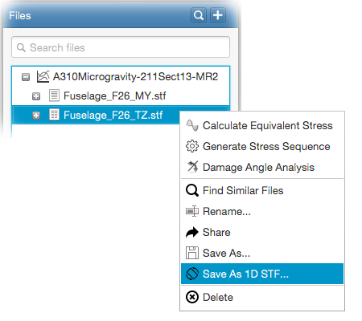

How to save 2D STF files as 1D STF files
You can transform 2D STF stress input files into 1D STF files via right-clicking on an STF file and selecting
- Save as 1D STF...
from the popup menu as shown in the following figure. Transformation can be
performed by either selecting a stress component (normal-x, normal-y or shear-xy) or by entering a rotation angle
to rotate the stress tensor.
